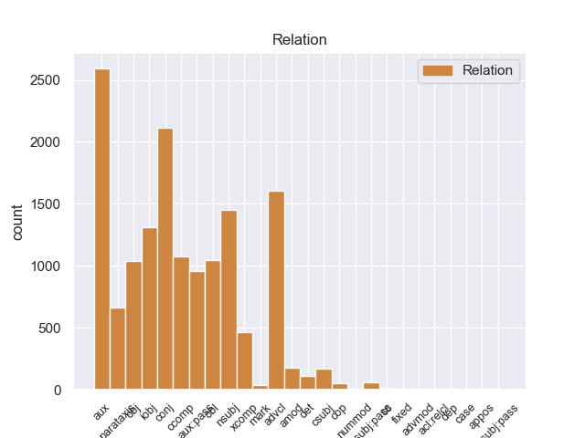
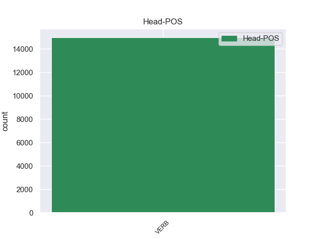
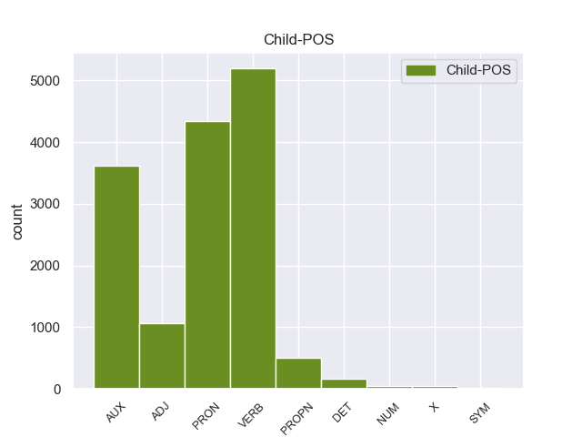

Distribution of features within this leaf



Agreement Rules sorted by frequency.
When the head token is VERB and the dependent token is VERB.
1 El _ _ _ _ 0 _ _ _
2 estudio _ _ _ _ 0 _ _ _
3 , _ _ _ _ 0 _ _ _
4 publicado _ _ _ _ 0 _ _ _
5 en _ _ _ _ 0 _ _ _
6 la _ _ _ _ 0 _ _ _
7 revista _ _ _ _ 0 _ _ _
8 Environmental _ _ _ _ 0 _ _ _
9 Health _ _ _ _ 0 _ _ _
10 Perspectives _ _ _ _ 0 _ _ _
11 , _ _ _ _ 0 _ _ _
12 precisó precisar VERB _ Mood=Ind|Number=Sing|Person=3|Tense=Past|VerbForm=Fin 0 _ _ _
13 que _ _ _ _ 0 _ _ _
14 el _ _ _ _ 0 _ _ _
15 herbicida _ _ _ _ 0 _ _ _
16 mata matar VERB _ Mood=Ind|Number=Sing|Person=3|Tense=Pres|VerbForm=Fin 12 ccomp _ _
17 una _ _ _ _ 0 _ _ _
18 gran _ _ _ _ 0 _ _ _
19 proporción _ _ _ _ 0 _ _ _
20 de _ _ _ _ 0 _ _ _
21 esas _ _ _ _ 0 _ _ _
22 células _ _ _ _ 0 _ _ _
23 después _ _ _ _ 0 _ _ _
24 de _ _ _ _ 0 _ _ _
25 sólo _ _ _ _ 0 _ _ _
26 dieciocho _ _ _ _ 0 _ _ _
27 horas _ _ _ _ 0 _ _ _
28 de _ _ _ _ 0 _ _ _
29 exposición _ _ _ _ 0 _ _ _
30 a _ _ _ _ 0 _ _ _
31 concentraciones _ _ _ _ 0 _ _ _
32 menores _ _ _ _ 0 _ _ _
33 que _ _ _ _ 0 _ _ _
34 las _ _ _ _ 0 _ _ _
35 utilizadas _ _ _ _ 0 _ _ _
36 en _ _ _ _ 0 _ _ _
37 el _ _ _ _ 0 _ _ _
38 uso _ _ _ _ 0 _ _ _
39 agrícola _ _ _ _ 0 _ _ _
40 . _ _ _ _ 0 _ _ _
When the head token is VERB and the dependent token is VERB. and the head token is VERB and the dependent token is PRON.
1 En _ _ _ _ 0 _ _ _
2 este _ _ _ _ 0 _ _ _
3 proyecto _ _ _ _ 0 _ _ _
4 nos yo PRON _ Case=Acc,Dat|Number=Plur|Person=1|PrepCase=Npr|PronType=Prs 5 obj _ _
5 acompañaban acompañar VERB _ Mood=Ind|Number=Plur|Person=3|Tense=Imp|VerbForm=Fin 0 _ _ _
6 como _ _ _ _ 0 _ _ _
7 músicos _ _ _ _ 0 _ _ _
8 Jose _ _ _ _ 0 _ _ _
9 Blond _ _ _ _ 0 _ _ _
10 a _ _ _ _ 0 _ _ _
11 la _ _ _ _ 0 _ _ _
12 batería _ _ _ _ 0 _ _ _
13 y _ _ _ _ 0 _ _ _
14 Jose _ _ _ _ 0 _ _ _
15 Prima _ _ _ _ 0 _ _ _
16 ( _ _ _ _ 0 _ _ _
17 Amphetamine _ _ _ _ 0 _ _ _
18 Dischargue _ _ _ _ 0 _ _ _
19 ) _ _ _ _ 0 _ _ _
20 a _ _ _ _ 0 _ _ _
21 la _ _ _ _ 0 _ _ _
22 guitarra _ _ _ _ 0 _ _ _
23 . _ _ _ _ 0 _ _ _
When the head token is VERB and the dependent token is VERB. and the head token is VERB and the dependent token is PRON. and the head token is VERB and the dependent token is AUX.
1 La _ _ _ _ 0 _ _ _
2 final _ _ _ _ 0 _ _ _
3 fue ser AUX _ Mood=Ind|Number=Sing|Person=3|Tense=Past|VerbForm=Fin 4 aux:pass _ _
4 protagonizada protagonizar VERB _ Gender=Fem|Number=Sing|Tense=Past|VerbForm=Part 0 _ _ _
5 por _ _ _ _ 0 _ _ _
6 Looder _ _ _ _ 0 _ _ _
7 y _ _ _ _ 0 _ _ _
8 Lytos _ _ _ _ 0 _ _ _
9 , _ _ _ _ 0 _ _ _
10 cuyo _ _ _ _ 0 _ _ _
11 vencedor _ _ _ _ 0 _ _ _
12 fue _ _ _ _ 0 _ _ _
13 este _ _ _ _ 0 _ _ _
14 último _ _ _ _ 0 _ _ _
15 por _ _ _ _ 0 _ _ _
16 decisión _ _ _ _ 0 _ _ _
17 de _ _ _ _ 0 _ _ _
18 el _ _ _ _ 0 _ _ _
19 jurado _ _ _ _ 0 _ _ _
20 ( _ _ _ _ 0 _ _ _
21 Eklips _ _ _ _ 0 _ _ _
22 , _ _ _ _ 0 _ _ _
23 Markooz _ _ _ _ 0 _ _ _
24 y _ _ _ _ 0 _ _ _
25 Bee _ _ _ _ 0 _ _ _
26 Low _ _ _ _ 0 _ _ _
27 ) _ _ _ _ 0 _ _ _
28 . _ _ _ _ 0 _ _ _
When the head token is VERB and the dependent token is VERB. and the head token is VERB and the dependent token is PRON. and the head token is VERB and the dependent token is AUX. and the head token is VERB and the dependent token is ADJ.
1 En _ _ _ _ 0 _ _ _
2 Chile _ _ _ _ 0 _ _ _
3 y _ _ _ _ 0 _ _ _
4 Argentina _ _ _ _ 0 _ _ _
5 esta estar VERB _ Gender=Fem|Number=Sing|VerbForm=Fin 0 _ _ _
6 la _ _ _ _ 0 _ _ _
7 mayor _ _ _ _ 0 _ _ _
8 población _ _ _ _ 0 _ _ _
9 , _ _ _ _ 0 _ _ _
10 siendo _ _ _ _ 0 _ _ _
11 más _ _ _ _ 0 _ _ _
12 abundante abundante ADJ _ Number=Sing 5 advcl _ _
13 en _ _ _ _ 0 _ _ _
14 la _ _ _ _ 0 _ _ _
15 Patagonia _ _ _ _ 0 _ _ _
16 . _ _ _ _ 0 _ _ _
When the head token is VERB and the dependent token is VERB. and the head token is VERB and the dependent token is PRON. and the head token is VERB and the dependent token is AUX. and the head token is VERB and the dependent token is ADJ. and the head token is VERB and the dependent token is PROPN.
1 Vio _ _ _ _ 0 _ _ _
2 interrumpidos _ _ _ _ 0 _ _ _
3 sus _ _ _ _ 0 _ _ _
4 estudios _ _ _ _ 0 _ _ _
5 en _ _ _ _ 0 _ _ _
6 1936 _ _ _ _ 0 _ _ _
7 a _ _ _ _ 0 _ _ _
8 el _ _ _ _ 0 _ _ _
9 iniciar iniciar VERB _ Gender=Masc|Number=Sing|VerbForm=Fin 0 _ _ _
10 se _ _ _ _ 0 _ _ _
11 la _ _ _ _ 0 _ _ _
12 Guerra guerra PROPN _ Gender=Fem|Number=Sing 9 obj _ _
13 Civil _ _ _ _ 0 _ _ _
14 Española _ _ _ _ 0 _ _ _
15 , _ _ _ _ 0 _ _ _
16 pasando _ _ _ _ 0 _ _ _
17 a _ _ _ _ 0 _ _ _
18 realizar _ _ _ _ 0 _ _ _
19 trabajos _ _ _ _ 0 _ _ _
20 de _ _ _ _ 0 _ _ _
21 oficinista _ _ _ _ 0 _ _ _
22 . _ _ _ _ 0 _ _ _
When the head token is VERB and the dependent token is VERB. and the head token is VERB and the dependent token is PRON. and the head token is VERB and the dependent token is AUX. and the head token is VERB and the dependent token is ADJ. and the head token is VERB and the dependent token is PROPN. and the head token is VERB and the dependent token is DET.
1 Vio _ _ _ _ 0 _ _ _
2 interrumpidos _ _ _ _ 0 _ _ _
3 sus _ _ _ _ 0 _ _ _
4 estudios _ _ _ _ 0 _ _ _
5 en _ _ _ _ 0 _ _ _
6 1936 _ _ _ _ 0 _ _ _
7 a _ _ _ _ 0 _ _ _
8 el el DET _ Definite=Def|Gender=Masc|Number=Sing|PronType=Art 9 det _ _
9 iniciar iniciar VERB _ Gender=Masc|Number=Sing|VerbForm=Fin 0 _ _ _
10 se _ _ _ _ 0 _ _ _
11 la _ _ _ _ 0 _ _ _
12 Guerra _ _ _ _ 0 _ _ _
13 Civil _ _ _ _ 0 _ _ _
14 Española _ _ _ _ 0 _ _ _
15 , _ _ _ _ 0 _ _ _
16 pasando _ _ _ _ 0 _ _ _
17 a _ _ _ _ 0 _ _ _
18 realizar _ _ _ _ 0 _ _ _
19 trabajos _ _ _ _ 0 _ _ _
20 de _ _ _ _ 0 _ _ _
21 oficinista _ _ _ _ 0 _ _ _
22 . _ _ _ _ 0 _ _ _
When the head token is VERB and the dependent token is VERB. and the head token is VERB and the dependent token is PRON. and the head token is VERB and the dependent token is AUX. and the head token is VERB and the dependent token is ADJ. and the head token is VERB and the dependent token is PROPN. and the head token is VERB and the dependent token is DET. and the head token is VERB and the dependent token is X.
1 The _ _ _ _ 0 _ _ _
2 Rolling _ _ _ _ 0 _ _ _
3 Stones _ _ _ _ 0 _ _ _
4 British _ _ _ _ 0 _ _ _
5 Tour _ _ _ _ 0 _ _ _
6 1966 _ _ _ _ 0 _ _ _
7 fue _ _ _ _ 0 _ _ _
8 una _ _ _ _ 0 _ _ _
9 gira _ _ _ _ 0 _ _ _
10 de _ _ _ _ 0 _ _ _
11 conciertos _ _ _ _ 0 _ _ _
12 musicales _ _ _ _ 0 _ _ _
13 realizada _ _ _ _ 0 _ _ _
14 por _ _ _ _ 0 _ _ _
15 la _ _ _ _ 0 _ _ _
16 banda _ _ _ _ 0 _ _ _
17 , _ _ _ _ 0 _ _ _
18 que _ _ _ _ 0 _ _ _
19 comenzó _ _ _ _ 0 _ _ _
20 el _ _ _ _ 0 _ _ _
21 23 _ _ _ _ 0 _ _ _
22 de _ _ _ _ 0 _ _ _
23 septiembre _ _ _ _ 0 _ _ _
24 de _ _ _ _ 0 _ _ _
25 1966 _ _ _ _ 0 _ _ _
26 y _ _ _ _ 0 _ _ _
27 finalizó finalizar VERB _ Mood=Ind|Number=Sing|Person=3|Tense=Past|VerbForm=Fin 0 _ _ _
28 el _ _ _ _ 0 _ _ _
29 9 _ _ _ _ 0 _ _ _
30 de _ _ _ _ 0 _ _ _
31 octubre _ _ _ _ 0 _ _ _
32 de _ _ _ _ 0 _ _ _
33 el _ _ _ _ 0 _ _ _
34 mismo _ _ _ _ 0 _ _ _
35 añ12o añ12o X _ Gender=Masc|Number=Sing 27 obl _ SpaceAfter=No
36 . _ _ _ _ 0 _ _ _
When the head token is VERB and the dependent token is VERB. and the head token is VERB and the dependent token is PRON. and the head token is VERB and the dependent token is AUX. and the head token is VERB and the dependent token is ADJ. and the head token is VERB and the dependent token is PROPN. and the head token is VERB and the dependent token is DET. and the head token is VERB and the dependent token is X. and the head token is VERB and the dependent token is NUM.
1 En _ _ _ _ 0 _ _ _
2 la _ _ _ _ 0 _ _ _
3 provincia _ _ _ _ 0 _ _ _
4 vecina _ _ _ _ 0 _ _ _
5 vivía _ _ _ _ 0 _ _ _
6 con _ _ _ _ 0 _ _ _
7 tres tres NUM _ Number=Plur|NumType=Card 8 nummod _ _
8 amigas amiga VERB _ Gender=Fem|Number=Plur|VerbForm=Fin 0 _ _ _
9 y _ _ _ _ 0 _ _ _
10 se _ _ _ _ 0 _ _ _
11 comunicaba _ _ _ _ 0 _ _ _
12 cada _ _ _ _ 0 _ _ _
13 tanto _ _ _ _ 0 _ _ _
14 con _ _ _ _ 0 _ _ _
15 su _ _ _ _ 0 _ _ _
16 familia _ _ _ _ 0 _ _ _
17 , _ _ _ _ 0 _ _ _
18 pero _ _ _ _ 0 _ _ _
19 ellos _ _ _ _ 0 _ _ _
20 con _ _ _ _ 0 _ _ _
21 ella _ _ _ _ 0 _ _ _
22 no _ _ _ _ 0 _ _ _
23 , _ _ _ _ 0 _ _ _
24 porque _ _ _ _ 0 _ _ _
25 la _ _ _ _ 0 _ _ _
26 joven _ _ _ _ 0 _ _ _
27 prefirió _ _ _ _ 0 _ _ _
28 no _ _ _ _ 0 _ _ _
29 exponer _ _ _ _ 0 _ _ _
30 a _ _ _ _ 0 _ _ _
31 sus _ _ _ _ 0 _ _ _
32 cercanos _ _ _ _ 0 _ _ _
33 . _ _ _ _ 0 _ _ _
When the head token is VERB and the dependent token is VERB. and the head token is VERB and the dependent token is PRON. and the head token is VERB and the dependent token is AUX. and the head token is VERB and the dependent token is ADJ. and the head token is VERB and the dependent token is PROPN. and the head token is VERB and the dependent token is DET. and the head token is VERB and the dependent token is X. and the head token is VERB and the dependent token is NUM. and the head token is VERB and the dependent token is SYM.
1 El _ _ _ _ 0 _ _ _
2 8 _ _ _ _ 0 _ _ _
3 de _ _ _ _ 0 _ _ _
4 diciembre _ _ _ _ 0 _ _ _
5 de _ _ _ _ 0 _ _ _
6 2006 _ _ _ _ 0 _ _ _
7 , _ _ _ _ 0 _ _ _
8 accedió acceder VERB _ Mood=Ind|Number=Sing|Person=3|Tense=Past|VerbForm=Fin 0 _ _ _
9 a _ _ _ _ 0 _ _ _
10 un _ _ _ _ 0 _ _ _
11 contrato _ _ _ _ 0 _ _ _
12 de _ _ _ _ 0 _ _ _
13 un _ _ _ _ 0 _ _ _
14 año _ _ _ _ 0 _ _ _
15 y _ _ _ _ 0 _ _ _
16 $ $ SYM _ Gender=Masc|Number=Sing 8 conj _ _
17 5 _ _ _ _ 0 _ _ _
18 millones _ _ _ _ 0 _ _ _
19 de _ _ _ _ 0 _ _ _
20 dólares _ _ _ _ 0 _ _ _
21 con _ _ _ _ 0 _ _ _
22 los _ _ _ _ 0 _ _ _
23 Reales _ _ _ _ 0 _ _ _
24 de _ _ _ _ 0 _ _ _
25 Kansas _ _ _ _ 0 _ _ _
26 City _ _ _ _ 0 _ _ _
27 . _ _ _ _ 0 _ _ _
Disagree Examples:
1 Ahora _ _ _ _ 0 _ _ _
2 bien _ _ _ _ 0 _ _ _
3 , _ _ _ _ 0 _ _ _
4 presumo _ _ _ _ 0 _ _ _
5 que _ _ _ _ 0 _ _ _
6 ese _ _ _ _ 0 _ _ _
7 asunto _ _ _ _ 0 _ _ _
8 no _ _ _ _ 0 _ _ _
9 es _ _ _ _ 0 _ _ _
10 demasiado _ _ _ _ 0 _ _ _
11 polémico _ _ _ _ 0 _ _ _
12 y _ _ _ _ 0 _ _ _
13 nos yo PRON _ Case=Acc,Dat|Number=Plur|Person=1|PrepCase=Npr|PronType=Prs 14 iobj _ _
14 parece parecer VERB _ Mood=Ind|Number=Sing|Person=3|Tense=Pres|VerbForm=Fin 0 _ _ _
15 que _ _ _ _ 0 _ _ _
16 constará _ _ _ _ 0 _ _ _
17 tan _ _ _ _ 0 _ _ _
18 sólo _ _ _ _ 0 _ _ _
19 de _ _ _ _ 0 _ _ _
20 una _ _ _ _ 0 _ _ _
21 recopilación _ _ _ _ 0 _ _ _
22 de _ _ _ _ 0 _ _ _
23 lo _ _ _ _ 0 _ _ _
24 que _ _ _ _ 0 _ _ _
25 hoy _ _ _ _ 0 _ _ _
26 es _ _ _ _ 0 _ _ _
27 un _ _ _ _ 0 _ _ _
28 cuerpo _ _ _ _ 0 _ _ _
29 consensual _ _ _ _ 0 _ _ _
30 de _ _ _ _ 0 _ _ _
31 derechos _ _ _ _ 0 _ _ _
32 y _ _ _ _ 0 _ _ _
33 nos _ _ _ _ 0 _ _ _
34 parece _ _ _ _ 0 _ _ _
35 de _ _ _ _ 0 _ _ _
36 la _ _ _ _ 0 _ _ _
37 más _ _ _ _ 0 _ _ _
38 elemental _ _ _ _ 0 _ _ _
39 justicia _ _ _ _ 0 _ _ _
40 que _ _ _ _ 0 _ _ _
41 se _ _ _ _ 0 _ _ _
42 incluyan _ _ _ _ 0 _ _ _
43 en _ _ _ _ 0 _ _ _
44 la _ _ _ _ 0 _ _ _
45 Carta _ _ _ _ 0 _ _ _
46 y _ _ _ _ 0 _ _ _
47 los _ _ _ _ 0 _ _ _
48 comparta _ _ _ _ 0 _ _ _
49 la _ _ _ _ 0 _ _ _
50 Unión _ _ _ _ 0 _ _ _
51 . _ _ _ _ 0 _ _ _
1 Ahora _ _ _ _ 0 _ _ _
2 bien _ _ _ _ 0 _ _ _
3 , _ _ _ _ 0 _ _ _
4 presumo _ _ _ _ 0 _ _ _
5 que _ _ _ _ 0 _ _ _
6 ese _ _ _ _ 0 _ _ _
7 asunto _ _ _ _ 0 _ _ _
8 no _ _ _ _ 0 _ _ _
9 es _ _ _ _ 0 _ _ _
10 demasiado _ _ _ _ 0 _ _ _
11 polémico _ _ _ _ 0 _ _ _
12 y _ _ _ _ 0 _ _ _
13 nos _ _ _ _ 0 _ _ _
14 parece _ _ _ _ 0 _ _ _
15 que _ _ _ _ 0 _ _ _
16 constará _ _ _ _ 0 _ _ _
17 tan _ _ _ _ 0 _ _ _
18 sólo _ _ _ _ 0 _ _ _
19 de _ _ _ _ 0 _ _ _
20 una _ _ _ _ 0 _ _ _
21 recopilación _ _ _ _ 0 _ _ _
22 de _ _ _ _ 0 _ _ _
23 lo _ _ _ _ 0 _ _ _
24 que _ _ _ _ 0 _ _ _
25 hoy _ _ _ _ 0 _ _ _
26 es _ _ _ _ 0 _ _ _
27 un _ _ _ _ 0 _ _ _
28 cuerpo _ _ _ _ 0 _ _ _
29 consensual _ _ _ _ 0 _ _ _
30 de _ _ _ _ 0 _ _ _
31 derechos _ _ _ _ 0 _ _ _
32 y _ _ _ _ 0 _ _ _
33 nos yo PRON _ Case=Acc,Dat|Number=Plur|Person=1|PrepCase=Npr|PronType=Prs 34 iobj _ _
34 parece parecer VERB _ Mood=Ind|Number=Sing|Person=3|Tense=Pres|VerbForm=Fin 0 _ _ _
35 de _ _ _ _ 0 _ _ _
36 la _ _ _ _ 0 _ _ _
37 más _ _ _ _ 0 _ _ _
38 elemental _ _ _ _ 0 _ _ _
39 justicia _ _ _ _ 0 _ _ _
40 que _ _ _ _ 0 _ _ _
41 se _ _ _ _ 0 _ _ _
42 incluyan _ _ _ _ 0 _ _ _
43 en _ _ _ _ 0 _ _ _
44 la _ _ _ _ 0 _ _ _
45 Carta _ _ _ _ 0 _ _ _
46 y _ _ _ _ 0 _ _ _
47 los _ _ _ _ 0 _ _ _
48 comparta _ _ _ _ 0 _ _ _
49 la _ _ _ _ 0 _ _ _
50 Unión _ _ _ _ 0 _ _ _
51 . _ _ _ _ 0 _ _ _
1 En _ _ _ _ 0 _ _ _
2 este _ _ _ _ 0 _ _ _
3 sentido _ _ _ _ 0 _ _ _
4 , _ _ _ _ 0 _ _ _
5 hemos haber AUX _ Mood=Ind|Number=Plur|Person=1|Tense=Pres|VerbForm=Fin 6 aux _ _
6 prometido prometer VERB _ Gender=Masc|Number=Sing|Tense=Past|VerbForm=Part 0 _ _ _
7 mucho _ _ _ _ 0 _ _ _
8 , _ _ _ _ 0 _ _ _
9 pero _ _ _ _ 0 _ _ _
10 creo _ _ _ _ 0 _ _ _
11 que _ _ _ _ 0 _ _ _
12 lograremos _ _ _ _ 0 _ _ _
13 mantener _ _ _ _ 0 _ _ _
14 nuestras _ _ _ _ 0 _ _ _
15 promesas _ _ _ _ 0 _ _ _
16 , _ _ _ _ 0 _ _ _
17 a _ _ _ _ 0 _ _ _
18 pesar _ _ _ _ 0 _ _ _
19 de _ _ _ _ 0 _ _ _
20 que _ _ _ _ 0 _ _ _
21 tenemos _ _ _ _ 0 _ _ _
22 ante _ _ _ _ 0 _ _ _
23 nosotros _ _ _ _ 0 _ _ _
24 un _ _ _ _ 0 _ _ _
25 camino _ _ _ _ 0 _ _ _
26 extraordinariamente _ _ _ _ 0 _ _ _
27 delicado _ _ _ _ 0 _ _ _
28 . _ _ _ _ 0 _ _ _
1 En _ _ _ _ 0 _ _ _
2 este _ _ _ _ 0 _ _ _
3 sentido _ _ _ _ 0 _ _ _
4 , _ _ _ _ 0 _ _ _
5 hemos _ _ _ _ 0 _ _ _
6 prometido _ _ _ _ 0 _ _ _
7 mucho _ _ _ _ 0 _ _ _
8 , _ _ _ _ 0 _ _ _
9 pero _ _ _ _ 0 _ _ _
10 creo creer VERB _ Mood=Ind|Number=Sing|Person=1|Tense=Pres|VerbForm=Fin 0 _ _ _
11 que _ _ _ _ 0 _ _ _
12 lograremos lograr VERB _ Mood=Ind|Number=Plur|Person=1|Tense=Pres|VerbForm=Fin 10 ccomp _ _
13 mantener _ _ _ _ 0 _ _ _
14 nuestras _ _ _ _ 0 _ _ _
15 promesas _ _ _ _ 0 _ _ _
16 , _ _ _ _ 0 _ _ _
17 a _ _ _ _ 0 _ _ _
18 pesar _ _ _ _ 0 _ _ _
19 de _ _ _ _ 0 _ _ _
20 que _ _ _ _ 0 _ _ _
21 tenemos _ _ _ _ 0 _ _ _
22 ante _ _ _ _ 0 _ _ _
23 nosotros _ _ _ _ 0 _ _ _
24 un _ _ _ _ 0 _ _ _
25 camino _ _ _ _ 0 _ _ _
26 extraordinariamente _ _ _ _ 0 _ _ _
27 delicado _ _ _ _ 0 _ _ _
28 . _ _ _ _ 0 _ _ _
1 La _ _ _ _ 0 _ _ _
2 Cumbre _ _ _ _ 0 _ _ _
3 de _ _ _ _ 0 _ _ _
4 Lisboa _ _ _ _ 0 _ _ _
5 , _ _ _ _ 0 _ _ _
6 que _ _ _ _ 0 _ _ _
7 sólo _ _ _ _ 0 _ _ _
8 con _ _ _ _ 0 _ _ _
9 eufemismos _ _ _ _ 0 _ _ _
10 podemos _ _ _ _ 0 _ _ _
11 caracterizar _ _ _ _ 0 _ _ _
12 como _ _ _ _ 0 _ _ _
13 " _ _ _ _ 0 _ _ _
14 Cumbre _ _ _ _ 0 _ _ _
15 sobre _ _ _ _ 0 _ _ _
16 el _ _ _ _ 0 _ _ _
17 empleo _ _ _ _ 0 _ _ _
18 " _ _ _ _ 0 _ _ _
19 , _ _ _ _ 0 _ _ _
20 a _ _ _ _ 0 _ _ _
21 pesar _ _ _ _ 0 _ _ _
22 de _ _ _ _ 0 _ _ _
23 todas _ _ _ _ 0 _ _ _
24 las _ _ _ _ 0 _ _ _
25 sonoras _ _ _ _ 0 _ _ _
26 proclamaciones _ _ _ _ 0 _ _ _
27 que _ _ _ _ 0 _ _ _
28 la _ _ _ _ 0 _ _ _
29 han haber AUX _ Mood=Ind|Number=Plur|Person=3|Tense=Pres|VerbForm=Fin 30 aux _ _
30 acompañado acompañar VERB _ Gender=Masc|Number=Sing|Tense=Past|VerbForm=Part 0 _ _ _
31 , _ _ _ _ 0 _ _ _
32 lo _ _ _ _ 0 _ _ _
33 único _ _ _ _ 0 _ _ _
34 que _ _ _ _ 0 _ _ _
35 ha _ _ _ _ 0 _ _ _
36 conseguido _ _ _ _ 0 _ _ _
37 es _ _ _ _ 0 _ _ _
38 avanzar _ _ _ _ 0 _ _ _
39 un _ _ _ _ 0 _ _ _
40 poco _ _ _ _ 0 _ _ _
41 más _ _ _ _ 0 _ _ _
42 hacia _ _ _ _ 0 _ _ _
43 la _ _ _ _ 0 _ _ _
44 transformación _ _ _ _ 0 _ _ _
45 de _ _ _ _ 0 _ _ _
46 el _ _ _ _ 0 _ _ _
47 empleo _ _ _ _ 0 _ _ _
48 en _ _ _ _ 0 _ _ _
49 empleabilidad _ _ _ _ 0 _ _ _
50 , _ _ _ _ 0 _ _ _
51 para _ _ _ _ 0 _ _ _
52 volver _ _ _ _ 0 _ _ _
53 a _ _ _ _ 0 _ _ _
54 definir _ _ _ _ 0 _ _ _
55 el _ _ _ _ 0 _ _ _
56 concepto _ _ _ _ 0 _ _ _
57 de _ _ _ _ 0 _ _ _
58 " _ _ _ _ 0 _ _ _
59 trabajador _ _ _ _ 0 _ _ _
60 " _ _ _ _ 0 _ _ _
61 , _ _ _ _ 0 _ _ _
62 para _ _ _ _ 0 _ _ _
63 desregular _ _ _ _ 0 _ _ _
64 las _ _ _ _ 0 _ _ _
65 relaciones _ _ _ _ 0 _ _ _
66 y _ _ _ _ 0 _ _ _
67 los _ _ _ _ 0 _ _ _
68 derechos _ _ _ _ 0 _ _ _
69 laborales _ _ _ _ 0 _ _ _
70 , _ _ _ _ 0 _ _ _
71 para _ _ _ _ 0 _ _ _
72 prestar _ _ _ _ 0 _ _ _
73 servicio _ _ _ _ 0 _ _ _
74 , _ _ _ _ 0 _ _ _
75 como _ _ _ _ 0 _ _ _
76 mejor _ _ _ _ 0 _ _ _
77 se _ _ _ _ 0 _ _ _
78 adecue _ _ _ _ 0 _ _ _
79 a _ _ _ _ 0 _ _ _
80 el _ _ _ _ 0 _ _ _
81 gran _ _ _ _ 0 _ _ _
82 capital _ _ _ _ 0 _ _ _
83 , _ _ _ _ 0 _ _ _
84 a _ _ _ _ 0 _ _ _
85 la _ _ _ _ 0 _ _ _
86 famosa _ _ _ _ 0 _ _ _
87 " _ _ _ _ 0 _ _ _
88 Nueva _ _ _ _ 0 _ _ _
89 Economía _ _ _ _ 0 _ _ _
90 " _ _ _ _ 0 _ _ _
91 ; _ _ _ _ 0 _ _ _